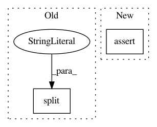

74cf61bdaa5b61b8a61fb3115eb6c664a5dcf955,tests/test_printing.py,,test_leaf_components_registers_compose_kernel_variable_properties,#,224
Before Change
def test_leaf_components_registers_compose_kernel_variable_properties(module_callable, expected_param_dicts):
module = module_callable()
for path, variable in leaf_components(module).items():
param_name = path.split(".")[-3] + "." + path.split(".")[-2] + "." + path.split(".")[-1]
assert isinstance(variable, gpflow.Parameter)
np.testing.assert_equal(variable.value().numpy(), expected_param_dicts[param_name]["value"])
assert variable.trainable == expected_param_dicts[param_name]["trainable"]
After Change
def test_leaf_components_registers_compose_kernel_variable_properties(module_callable, expected_param_dicts):
module = module_callable()
leaf_components_dict = leaf_components(module)
assert len(leaf_components_dict) > 0
for path, variable in leaf_components_dict.items():
path_as_list = path.split(".")
param_name = path_as_list[-3] + "." + path_as_list[-2] + "." + path_as_list[-1]
assert isinstance(variable, gpflow.Parameter)
In pattern: SUPERPATTERN
Frequency: 3
Non-data size: 2
Instances
Project Name: GPflow/GPflow
Commit Name: 74cf61bdaa5b61b8a61fb3115eb6c664a5dcf955
Time: 2019-10-07
Author: sergio.diaz@prowler.io
File Name: tests/test_printing.py
Class Name:
Method Name: test_leaf_components_registers_compose_kernel_variable_properties
Project Name: undertheseanlp/underthesea
Commit Name: 89ad361f08dca73d8f94608c99c729e9987a011d
Time: 2017-10-11
Author: brother.rain.1024@gmail.com
File Name: tests/chunking/test_chunk.py
Class Name: TestChunk
Method Name: test_accuracy
Project Name: GoogleCloudPlatform/python-docs-samples
Commit Name: 4b91143f8848e0df40955163ad851603dd12e70a
Time: 2020-06-15
Author: tmatsuo@google.com
File Name: iam/api-client/service_accounts_test.py
Class Name:
Method Name: test_service_accounts